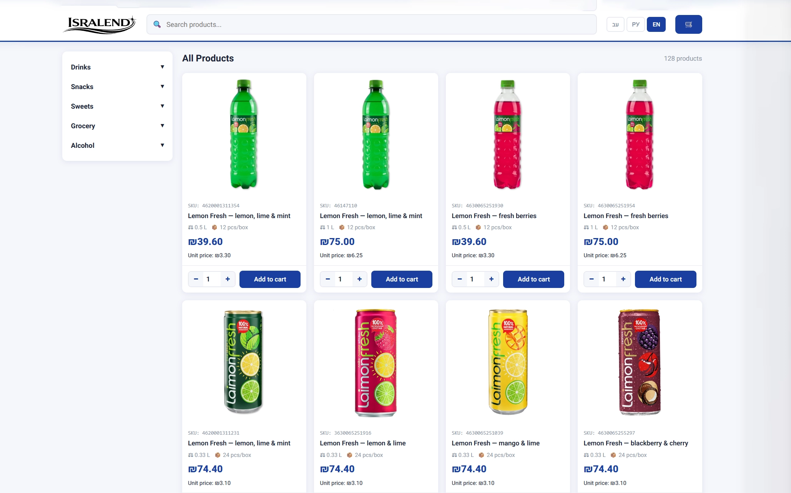
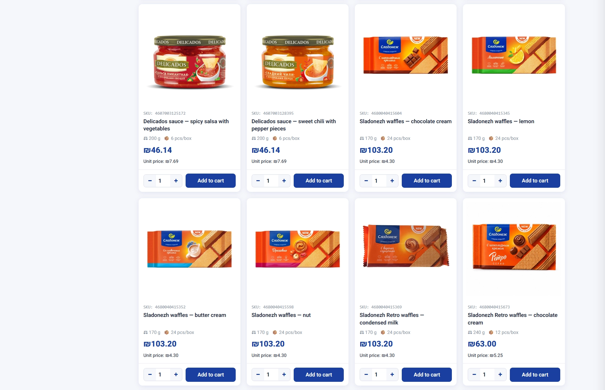

01
Каталог продуктов
Структура категорий и товаров, которую можно расширять без пересборки всей логики.
E-commerce
Онлайн-маркет продуктов питания с каталогом, корзиной, тремя языками и автоматической отправкой заказов.

О проекте
Isralend — онлайн-маркет продуктов питания. Сайт сделан для удобного выбора товаров, оформления заказа и передачи заявки без сложной CRM: пользователь проходит от каталога до корзины, а заказ автоматически уходит в Telegram и на email.
Проект собран как практичный e-commerce-инструмент с упором на скорость запуска, понятную структуру и дальнейшее масштабирование ассортимента.
Интерфейс
Основной экран показывает продуктовую структуру сайта: категории, карточки товаров, корзину и сценарий оформления заказа в одном понятном пользовательском потоке.

Реализация
01
Структура категорий и товаров, которую можно расширять без пересборки всей логики.
02
Понятная подача товара: название, визуал, цена и быстрый путь к добавлению в корзину.
03
Сценарий проверки заказа перед отправкой, без лишних шагов и сложной регистрации.
04
Форма собирает данные пользователя и помогает превратить выбор товаров в готовую заявку.
05
Заказ автоматически отправляется в Telegram и дублируется на email для обработки.
06
Мультиязычная логика помогает адаптировать интерфейс под разные пользовательские сценарии.
07
Сайт работает как витрина и инструмент заказа на мобильных и desktop-экранах.
08
Структура рассчитана на добавление новых товаров, категорий и рабочих сценариев.
09
Задача проекта — получить функциональный e-commerce-инструмент без длинного цикла разработки.
Mindmap
Вместо набора отдельных экранов проект держится на связке каталога, пользовательского сценария, коммуникаций и мультиязычности.
Isralend
Онлайн-маркет, где продуктовая витрина сразу связана с корзиной, заявкой и каналами обработки заказа.
Vibe coding
Проект был собран в формате vibe coding: от идеи и структуры каталога до рабочей логики корзины, мультиязычности и отправки заказов. Такой подход позволил быстро получить не просто макет, а функциональный сайт, готовый к проверке на реальных пользователях.